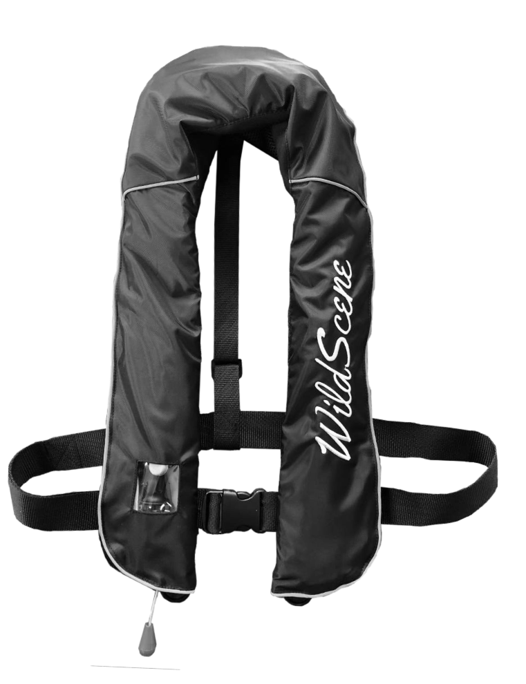
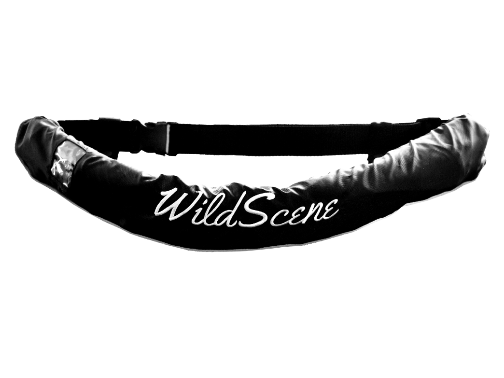
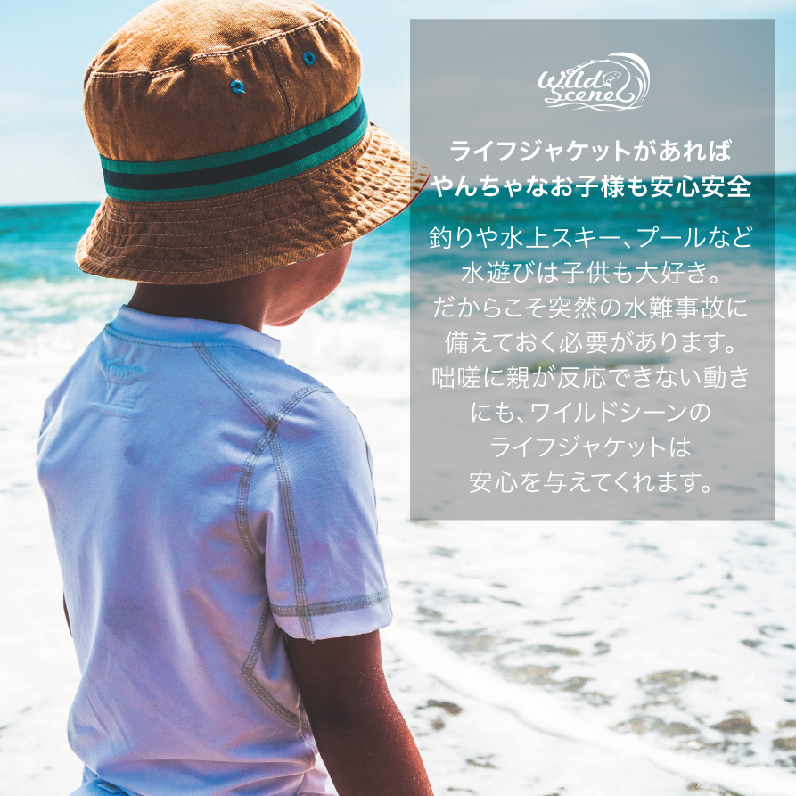

LIFE JACKET
あなたの命を守ります。 大切なあなた、大切な家族とずっと一緒にいたいから

キャンペーンの案内
Wild Sceneとは?

WildSceneは【ソルトフィッシング】を専門としたブランドでネット通販専門のソルトルアーメーカーです。
従来のJAPANブランドのような高いブランドフィーを乗せることをせず、品質とコスパのバランスを追い求めた製品を取り揃えています。
WildSceneの理念としましては、【お客様と作り上げていく】を目標に製品開発を心がげています。
初めて存在を知った方も、もう知っている方も含めてこれからもWildSceneの製品開発とご支援をよろしくお願い致します。

Wild Sceneではオリジナルのメタルジグ「Wild Scene（ワイルドシーン）」をはじめ、当店こだわりのソルトルアーを多数取り扱っております！
ルアーロストやキャストミス・根がかりが気になり狙えなかったポイントも大胆に攻め大物狙いを可能に！週末アングラーのお財布に優しいコストパフォーマンスでご提供しております！
■ワイルドシーンのライフジャケットおすすめポイント
安全性を確保できるだけでなく、釣りやカヌーなどのアウトドアを楽しく快適なものにしてくれます。
安全性に優れたライフジャケットでも、使いやすさは異なります。
少しでも快適なライフジャケットを選択するに越したことはありません。
ワイルドシーンのライフジャケットには、安全性以外にもおすすめできるポイントが満載です。おすすめポイントを4つ紹介します。
■実際の大きさは、こんなにコンパクト
ライフジャケットの重要性は理解していても、サイズが大きすぎるとアウトドアの際に装着が不便に感じてしまうことでしょう。
ワイルドシーンのライフジャケットはスリムでコンパクトな設計にデザインされています。
縦幅54cm×横幅33cmのサイズで、厚みは1cmです。
ベスト
タイプ
腰巻
タイプ

重さを徹底的に減らすよう追求し、本体重量をベストタイプ550g/ 腰巻タイプ750gにまで軽量化しました。
だいたい500ミリリットルのペットボトルに近い重さです。
フィット感を限りなく高めているので、さまざまな体勢や動きに追従しやすくなっています。
その動きやすさは、まるでライフジャケットを装着していない状態です。
活発に動くウォータースポーツでも活用できます。
ライフジャケットの正しい装着方法
まず、ライフジャケットは各メーカーから多種多様な製品が出ていることから、目的や用途に合ったものを選択しましょう。装着する際は、付属のベルトを体に密着させるように意識します。
締め付けが悪いと水中に落ちたときに脱げてしまうケースがあるからです。水中でライフジャケットの位置を修正するのは困難であるため、事前の装着準備が重要です。股下ベルトがないライフジャケットは、腹回りのベルトを入念に締めるようにしましょう。

3D立体裁断&メッシュ構造で
安全性を考慮した装備
特筆すべきは最先端の加工技術である3D立体裁断が優れた吸着性能を発揮していることです。首や肩、胸部に柔軟に密着し、着用時の肩ずれやゴワツキなどの不快感を和らげられるようになっています。
また、体に触れる部分がメッシュ構造になっているので、熱気を逃がしてくれます。蒸れにくいことから、真夏のアウトドアでも快適に装着できます。
ライフジャケットが作動しても、救助されなければ意味がありません。場合によっては、声を張り上げても気づいてもらえないこともあるでしょう。
その点、ワイルドシーンのライフジャケットの内部にはホイッスルが付属されています。悪天候で視界の悪いシーンや、近くに人がいない状況でも落水したことを知らせることが可能です。
加えて、ワイルドシーンのライフジャケットは、エッジにリフレクティブラインを採用しています。入射光を光源の方向にまっすぐ戻す仕組みで、効率的に光を反射することが可能です。
夜間でも視認性を発揮してくれるので、ホイッスルを併用すれば暗闇の中でも発見される可能性が高くなると期待できます。
膨張方式
|
 |
ライフジャケットは、自動膨張式と手動膨張式の2種類に分かれます。 |
|
|
|
一方、手動膨張式はライフジャケットに備わっているホースを使い自分で膨らませる必要があります。 |
水に濡れても大丈夫
自動膨張式と手動膨張式の主な違いはスプールの有無であり、スプールがある自動膨張式のほうは少し値段が高い傾向です。
しかし、泳ぎに不安がある方や水に触れる場面が少ないスポーツを楽しまれる方は、自動膨張式のほうが安全性が高いと感じます。
自動膨張式の弱点としては悪天候でのアウトドアで、大雨や波をかぶった際に開いてしまう恐れがありますので
予備として、手動膨張式のライフジャケットを用意するなどの工夫が必要です。
ライフジャケットの装着スタイルは、ベストタイプと腰巻タイプの2種類に分かれます。
ベストタイプは上半身全体を覆ってくれるライフジャケットです。装着面積が比較的大きいことから安全性が比較的高い特徴があります。
最もオーソドックスなのが、フロントのバックルで固定するタイプです。体型に応じて幅広いサイズをカバーできます。
腰巻タイプは、ベルトのように腰に巻くライフジャケットです。体に接する面積が小さいので、目立ちにくいほか身軽であるというメリットがあります。
また、浮力が腰を中心に働くことから手足を動かしやすいのもポイントです。
そのほか、蒸れにくいため、真夏でも装着しやすいといえるでしょう。ただ、岩の多い磯では浮力体が擦れて破損してしまうリスクもあります。
安全性が求められるシチュエーションではベストタイプ、泳ぎに慣れている人が動きやすさを追求するケースでは腰巻タイプが好まれます。
妥協を許さない気室の開発
そもそも気室とは、空気によって膨らみ浮力体となる部分で、この部分に穴が開くとライフジャケットとしての存在意義を失いかねません。では、使用上問題がない気室の定義について確認してみましょう。
日本の国交省は塩化ビニルで作成された気室について、使用上問題がないと判断できる条件を下記の通り定めています。
・膨張後24時間経過時に浮力を7.5kg以上に保てる
・二酸化炭素の減少度を－5%以下に抑えられる
しかし、ワイルドシーンのライフジャケットは安全性の追求にこだわり、これらの条件よりも厳しい国際基準IMOに準拠した規格で気室を開発しました。
【約3日間の持続力】
結果、気室における二酸化炭素減少率の比較実験で、膨張後72時間経過しても減少率を約0%に近づけることに成功。
つまり、日本国内の基準を満たしただけの製品よりも水中で浮かんでいられる日数も長く、救助までの時間を延ばせるといえます。
【法定基準を上回る浮力】
また、ワイルドシーンのライフジャケットはボンベの内容量をできる限り増加しているのも特徴です。そのため、浮力は法定基準の7.5kgを上回る16.2kgになっています。浮力とは文字通り水中から受ける浮き上がる力のことです。
水中では体重が1/10になることをふまえると、ワイルドシーンのライフジャケットを装着すれば体重162kgだとしても浮かせられます。
仮に子供を助けるために水中に飛び込んだとしても、ワイルドシーンのライフジャケットならば二人分を浮かせるには十分といえるでしょう。法定基準を上回る浮力の高さは、水辺のアクシデントで有効に働くと期待できます。
Read More
専用生産ラインにおける入念なチェック体制
ワイルドシーンのライフジャケットは、正規契約にもとづく自社工場の専用生産ラインによって製造されています。専属職員が生産ラインを確認し、品質の改善指導を行いつつ協議を進めています。
前述した気室については、特に入念なチェックを行っています。
具体的には、膨張時における気室圧力、エア漏れの有無、膨張後から24時間後の減衰状態などを検査しています。水没テストに関しては、最低3回チェックするほどの徹底ぶりです。
さらに、気室を外装に装着した後も改めて膨張テストを実施。最後まで実施される妥協のない検査こそ、ワイルドシーンのライフジャケットに安全性をもたらしています。
Read More
2WAYタイプの自動膨張式
前述した通り、一般的なライフジャケットは手動膨張式と自動膨張式の2種類に分けられます。手動膨張式は水に濡れやすい状態で活動することを前提としています。
ただし、水辺のアウトドアでは、予期せぬ場面で落水してしまう恐れがあります。慌てている状態に手動でライフジャケットを起動させるのは困難といえるでしょう。
その点、ワイルドシーンのライフジャケットは自動膨張式。落水時に自動で起動するので、突然のアクシデントにも対応しやすいです。特に、防波堤や船などで釣りを行う際に重要な役目を果たしてくれます。
さらに、万が一落水時に起動しなかった場合に備えて、レバーを引いて手動で作動させられるようにもなっています。
2WAYタイプの仕組みによって想定外を排除し、安全性を可能な限り高めているのです。
Read More
防水&UVカット性能で生地が劣化しにくい
装着者の命を守るライフジャケットには頑丈さも求められます。その点、ワイルドシーンのライフジャケットの生地には密度840デニールの高強度糸を幾重にも織り込んだ特殊ナイロンが用いられています。アウトドアの際にも破損を気にせず活動できるでしょう。
ただし、出荷当時のライフジャケットに問題がなくても、使用しているうちに劣化してしまっては、いざというときにトラブルになりかねません。また、ライフジャケットは水の浸透によって誤作動を起こしてしまうケースもあります。
ワイルドシーンのライフジャケットには強力な撥水力を備えた生地を採用。加えて防水性能を付与しているため、劣化や誤作動のリスクを最小限に抑えることが可能です。
また、海水や淡水の浸食にも耐性が強く、気室の劣化も防ぎやすくなっているのもポイント。撥水性が落ちても、市販の撥水材で効果をもとの状態に近づけることもできます。
さらに見過ごせない点が、特殊加工によってUVカット性能まで強化されているところです。直射日光による生地の劣化も防いでくれます。炎天下のアウトドアが多い方でも、安心して活用できるでしょう。
このように、ワイルドシーンのライフジャケットは、水と光の影響まで考慮することで劣化を可能な限り防ぎ、安全性を追求しています。
Read More
世界的メーカーによる各種装置を採用
ワイルドシーンのライフジャケットを構成する膨張装置は特殊生産をしています。現在、膨張装置で有名なグローバル企業として、国際基準ISO認証企業でDAIWAやYAMAHAなどの主要ライフジャケットメーカーも同社の製品を取り入れています。
また、ワイルドシーンのライフジャケットでは、膨張装置だけでなくスプールも特殊な部品を採用しています。スプールは、水分を感知して気室を膨張させる中継機能を担うため、膨張装置と密接な関係があります。
その点もふまえて、ワイルドシーンのライフジャケットでは、膨張装置とスプールを同じブランドでそろえたというわけです。
さらに安全性を高めるために、吸気チューブにも同社の高品質な商品を用いています。気室に空気を送入して膨らませるコンポーネントです。逆止弁が備わっており、空気の逆流や漏れを防止し、膨張を効率的に促進します。
この各種装置がワイルドシーンの安全性の基盤となっています。
Read More
調節具には耐久性の高いポリアセタールを使用
アジャスターやバックルなどの調節具もライフジャケットの安全性を左右します。その調節具に選んだ素材はポリアセタールです。強度と安全性に優れた5大汎用エンジニアリング・プラスチックの一つとして知られています。
本来、プラスチックの種類はさまざまで、透明度の高い素材や繊維として使われる素材などがあります。そのプラスチックの中でも強度や耐摩耗性などに優れる素材がエンジニアリング・プラスチックです。
具体的にポリアセタールは下記の特性を備えています。
・弾性
・耐磨耗性
・自己潤滑性
・剛性
・靭性
・温度安定性
まず引っ張りや曲げ強さが大きいだけでなく、摩擦係数が少ないのでギアのような部品にも使われることが多い傾向です。また、耐熱・耐寒にも優れるほか、吸湿性も少ないことから、高温多湿の環境でも強度が劣化しにくい特徴もあります。
調節具は小さな部分で、ライフジャケットの構成部品の中でも目にとどまりにくい部分かもしれません。ワイルドシーンのライフジャケットは、細部まで妥協なく安全性を追求しているのです。
Read More
欧州規格CE取得製品
性能が高いといわれるライフジャケットはたくさん出回っていますが、それを示す根拠がなければ信頼できないという方もいることでしょう。
CE認証は、EU加盟国の定めた安全基準を満たしていることを示す証明です。CEマークがない製品はヨーロッパに輸出できません。
この認証を獲得するためには、認証機関の厳格で公正な審査のもと、適合性評価や品質システムの認定をクリアする必要があります。
ただし、CE認証を取得していないにもかかわらず、あたかも審査を通った製品として売り出す販売者も少なくありません。
CEマークの真偽を確かめるためには、CEマークライセンス証明書が必要です。この証明書は、製造工場がCEライセンスを取得・所持していることを示す書類です。
ワイルドシーンのライフジャケットは、このライセンス証明書にもとづいて販売され、安全性が証明されています
Read More
ライフジャケットが大切な命を守る
アウトドアで大切な命を失うことがあってはなりません。 大切な命を守り、楽しい思い出を作るにはライフジャケットが不可欠です。
ほんの少しの配慮で大切な子供の命を守れる 子供の将来のことを考えてみてください。 わんぱくだった子供が暖かな家庭を築き、 親御さんは孫に囲まれて幸せなひと時を過ごしているかもしれません。
しかし、アウトドアの水難事故は恐ろしいです。トラブルに巻き込まれれば、 一瞬でそのような未来が失われてしまうかもしれません。
水辺のアウトドアも同様です。好奇心を抑えられず、親御さんが目を離したうちに 危険な場所で遊んでしまうかもしれません。
ただ、過保護になりすぎても 子供の成長を妨げてしまいます。 このようなジレンマでストレスを抱えていては、子供はもちろんのこと、 親御さんもアウトドアを心から楽しめません。 最低限の対策をすれば、 トラブルに対する不安を和らげてくれます。何も難しいことではありません。
ほんの少しの配慮で、「家族で毎年アウトドアを楽しめる」、そんな当たり前の 日常を守ることができるのです。ライフジャケットを準備して、 これから明るい未来を築いていく子供を守ってください。
ライフジャケットをつけることがマナーから義務に
ライフジャケットの装着によって、生存率は本当に高まるのでしょうか？ライフジャケットの効果をはじめ、
日本におけるライフジャケットの着用義務について紹介します。
国土交通省海事局安全政策課は、海中転落時の生存率に関するデータを提示しています。ライフジャケットを着用していない場合の生存率は約27%で、着用していた場合の生存率は約60%となっています。
つまり、ライフジャケット着用者が海中に転落したときの生存率は、非着用者の2倍以上になります。したがって、乗船中は船長の指示がなくても、ライフジャケットを装着することが重要です。ちなみに、防水機能のある携帯電話を備えていれば、さらに生存率が高まります。

従来、遊漁船におけるライフジャケットの着用義務は下記のケースでした。
・海中転落のおそれがある作業をする場合
・12歳未満の小児
・磯の上における釣り
なお、遊漁船の利用者（船室外）における着用はあくまで努力義務にとどまっていました。
国土交通省海事局安全政策課によると、平成30年2月1日以降において、小型船舶の船室外の甲板上では、すべての乗船者にライフジャケットの着用が義務付けられました。
適用除外のケースもあり、具体的には下記の通りです。
・船室内にいる
・船長が定めた安全な場所にいる
・命綱を着用している
・船外で泳ごうとする直前
・専用装備にもとづく海上スポーツ
・防波堤内の係留船上にいる
ライフジャケットを着用させる義務を怠った船長は、最大6か月にわたる免許停止の対象になることもあり、罰則が強化されつつあります。
最低限知っておきたいライフジャケットの選び方
水辺の危険性とライフジャケットの重要性を知った後に気になるのが、ライフジャケットの選び方でしょう。
ライフジャケットを装着するのは命を守るためです。いかに見た目がおしゃれで動きやすいライフジャケットだとしても、品質が低ければ有事の際に機能しないこともありえます。
したがって、ライフジャケットを選択するときは特に安全性の高さにこだわりましょう。最低限、法定基準を満たすライフジャケットを選択することが大切です。
ワイルドシーンのライフジャケットで充実したアウトドアライフを！
ワイルドシーンのライフジャケットは、その安全性と快適な着心地から、数多くのアウトドアシーンで活用できます。川釣りやヨット、ラフティング、カヌー、クルージングなどさまざまです。
レジャーだけにとどまらず、養殖業や河川工事、臨海学校などにも利用可能です。近年は水害の被害も増しています。その点、防災用として用意しておくだけでも、いざというケースに役立つことでしょう。
・妥協を許さない気室の開発
・専用生産ラインにおける入念なチェック体制
・2WAYタイプの自動膨張式
・防水&UVカット性能で生地が劣化しにくい
・世界的メーカーによる各種装置を採用
・調節具に耐久性の高いポリアセタールを使用
・欧州規格CE取得製品
・コンパクトな薄型で超軽量
・フィット感も抜群で動きやすい
・3D立体裁断&メッシュ構造で快適な装着感
・豊富なカラーバリエーションでコーディネートも楽しめる
・救命率を高めるホイッスル付き
・エッジにリフレクティブラインを採用
キャンペーンの案内
～安全で充実したFISHING Lifeを応援します～
水辺の安全に対して
私達が住む日本は、周りが海で囲まれています。そして四季を通して豊かな自然に恵まれ、各地様々な釣り場がたくさんあります。またその反面、私達は釣りを楽しむことであらゆる危険のリスクがあるということは言うまでもありません。私達は気象に対する適正な判断をしっかり身に付ける必要があるのです。
季節の変わり目は特に春一番のような突風が吹いたり、雷や竜巻など起こることが珍しくありません。それから台風や高潮、地震による津波といった自然災害にも直面することがしばしばあります。
また夏本番前後には、太平洋のはるか南の沖合で発生した台風からのうねりが、突然高い波となって押し寄せる『土用波（どようなみ）』が発生し、海面に近い場所等は、満潮が重なった時は高波の恐れがあるので十分に気をつけないと危険です。
海釣りでは、凪の日よりも波気のある日に釣果が期待出来ることもあるために、多少のリスクがあっても釣りをする人は少なくありません。
「まだ直撃してないから大丈夫」ではもうすでに遅いのです。中には命を落とす人もいますので、自分の身は自分で守るように心がけましょう。自ら避けられる危険は多いのです。
Read More
【気象情報をこまめにチェックする】
釣行前には必ずテレビのニュースはもちろんのこと、パソコンやスマートフォンで気象情報を確認しておき、せめて自分が行こうとしているポイント周辺に警報や注意報が出ていないかを見ておきましょう。もし該当すればポイントを変更するか、日を改めて下さい。
また地震などの自然災害では、いつ発生するか予測不能な部分はあります。しかし最近では地震速報など、スマートフォンにいち早くアラーム音で知らせてくれます。発生したら地震の大きさに関係なく、まず津波がくることを前提としてすぐ海から離れましょう。
Read More
海で釣りをするための基本装備と準備
その他に大切なことは服装と準備です。ここから釣りの全てが始まるといっても過言ではありません。それは安全を確保する格好でなければなりません。特に堤防や磯、また船の釣りではライフジャケットが必要不可欠です。知り合いやお店で借りられる場合はいいですが、基本的には自分で揃えることを心がけましょう。劣化などによる不備で本来の安全が確保出来ないことも懸念されます。使用前にまず確認をして下さい。
【基本の服装と装備】
【ナイトゲームにおける注意点】
もともと昔は暗くないと魚は釣れないと言われていたらしいが、今ではデイゲームがすっかり定着している。しかし一般的にナイトゲームの方が大型のサイズが狙えやすいのです。
反面、注意しないといけないことはデイゲームよりもたくさんあります。大幅に視界が狭くなることによるトラブル（常夜灯のない足場やライントラブル等）・事故（海への転落など）の発生率が高くなりますので、極力単独より複数人での釣行がまず望ましいです。
まずはナイトゲームに出掛ける時に、必ずライトを身に付けて行きましょう。頭に付ける明るいLEDタイプのライトから首に掛けるタイプまで、お店やインターネットで多くの種類の中から選べますので購入することをオススメします。まだナイトゲームをした事がない人でも来るべき日に備え、事前に購入しておきましょう。
Read More

【毒魚に対する心構え】
水辺の注意点として、先ほどにも述べましたが毒を持つ魚に遭遇することは避けられません。しかし正しい知識をもって対処すれば、必要以上に恐れることはありません。
まず第一に毒を持つ魚であるという事を認識することが最重要で、素手で魚を掴まないで、プライヤーなどでしっかり針を外してあげましょう。誤って毒針に刺さる時の最も多いケースは釣った毒魚を針から外す時です。
お守りとしてポイズンリムーバーを準備しておけば安心です。これは吸引タイプの応急用毒吸取り器になります。使い方は簡単で、強力に毒を吸引し傷口から抽出するよう設計されているので、指で絞り出したり口で吸い出すよりは毒を排除しやすいと思います。値段も凄く高くはないので、準備しておくのがいいでしょう。
【まとめ】
私達は基礎知識をしっかり身に付け、ルールとマナーをきちんと守ることが大切です。”ゴミを捨てない”、”立ち入り禁止場所には入らない”、”車の無断駐車・違法駐車をしない”、”騒音をたてない”といった地域住民やその場所で漁師として仕事をしている方々に絶対迷惑を掛けないようにしましょう。
最低限度のマナーを守れる釣り人は本当に素敵ですし、釣り人同士お互いが不愉快な思いをしないように釣りを楽しむことが一番大事なことですよね。